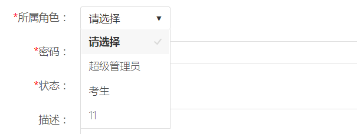

下拉框默认使用了Select-or-Die插件进行美化，Select-or-Die 就是一款基于 jQuery 的下拉框美化插件， 你不用修改你原来的下拉框，它能够完全无缝的对你原来的下拉框进行美化， 它甚至还支持添加前缀、HTML data 属性、键盘循环控制、设置高度、跳转到链接以及回调函数等等。 除了默认的样式外，Select-or-Die 还另外提供了 3 套皮肤，相信有了 Select-or-Die，你的设计会更加统一、美观。
Select-or-Die需要引用以下文件：
使用时不需要修改原始select组件的html代码，只需添加js代码：
$(function(){
$("select:not('.defalut')").selectOrDie();
});
插件美化后的效果，如下图所示：
Select-or-Die支持以下配置：
| 属性/方法 | 类型 | 默认值 | 说明 |
|---|---|---|---|
| customID | 字符串 | 空 | 绑定 id |
| customClass | 字符串 | 空 | 绑定 class |
| placeholder | 字符串 | 空 | 占位符，同 HTML5 placeholder 属性 |
| prefix | 字符串 | 空 | 添加前缀 |
| cycle | 布尔值 | false | 键盘控制是否循环 |
| links | 布尔值 | false | 跳转到链接 |
| linksExternal | 布尔值 | false | 跳转到外部链接 |
| size | 整数 | 0 | 设置高度（个数），如果你有一个很长的下拉 |
| tabIndex | 整数 | 0 | 设置 tabindex |
| onChange | 函数 | 空 | 下拉框改变之后的回调函数 |